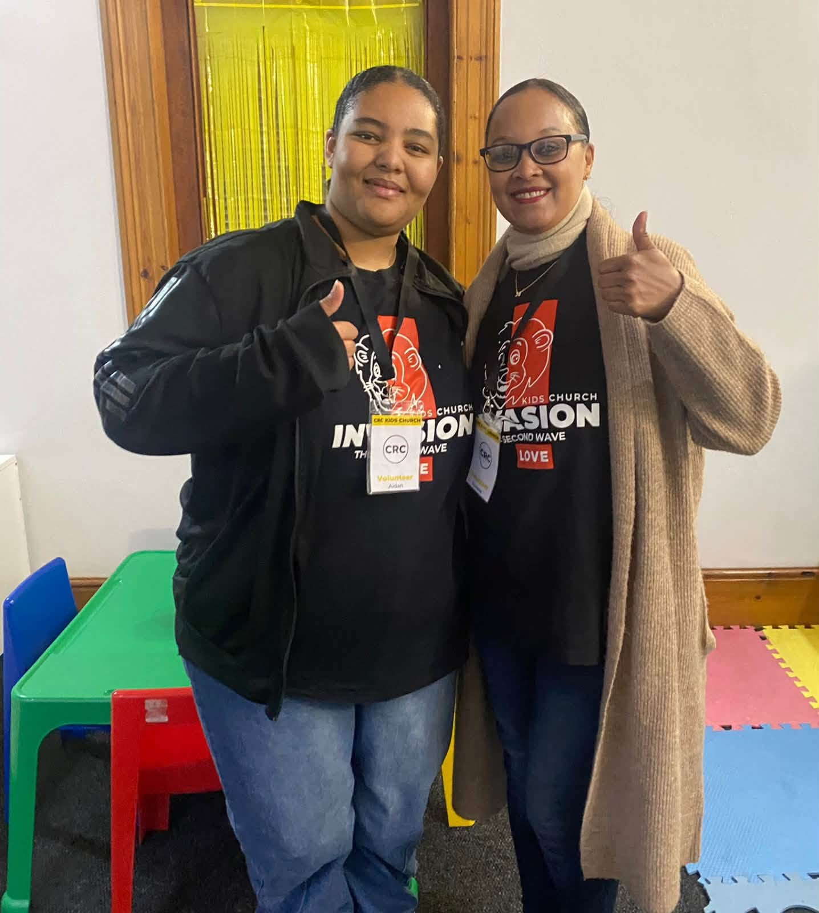
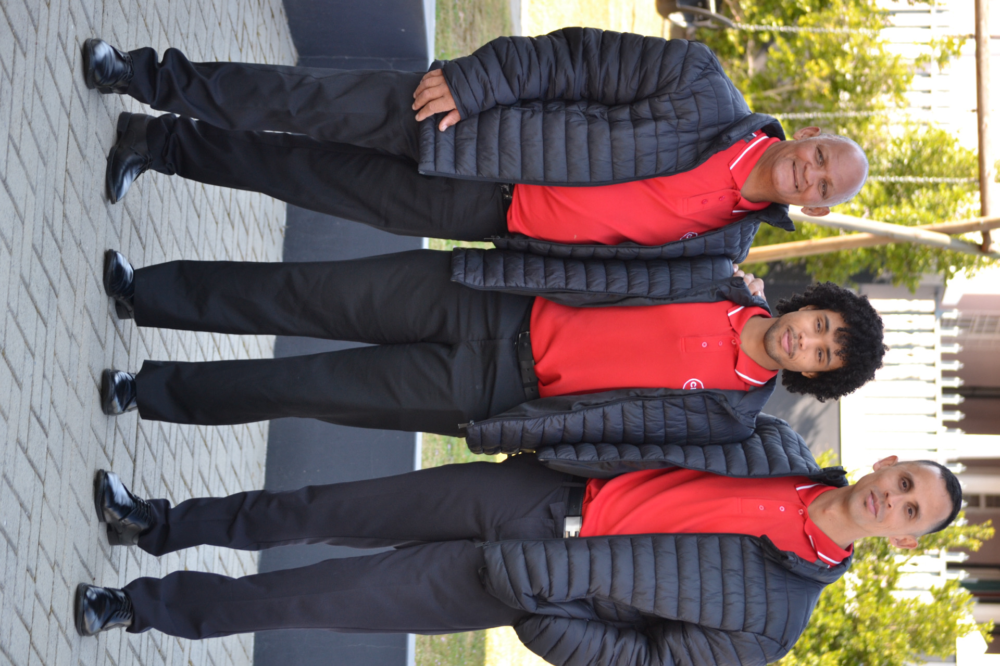

Whatever your age or stage, there's a ministry at CRC Malmesbury for you.
Music Ministry
Our Music Ministry is a vibrant ministry of Instrumentalists and Singers, worshipping together to usher people into the Presence of God. Join our different sections, from singing to playing instruments like Piano, Keys, Drums, guitars, orchestral instruments, and many more!
Start serving →
Kids Church
Our Kids Church is a vibrant and dynamic Children’s Ministry, raising a super-Jesus generation! Our vision is to equip and empower children to become the next generation of Godly leaders by encountering Jesus in a safe environment.
Learn more →Sound & Media
Sound and Media form a crucial part of our church and vision, building one Church in many locations. Our CRC Media team is largely volunteer-driven, filled with passionate members who give their time and talents to the house of God, helping us make a difference as we work to win the lost at any cost!
Start serving →
Ushers & Hostesses
Our “red and black brigade” are on the front lines of our Sunday services. They are the first friendly faces you see as you drive in, making parking as easy as possible for our members. They stand ready at the doors, welcoming and directing you to wherever you need to go.
Start serving →Altar Workers
At CRC, we are all about winning souls for Jesus! Win the lost at any cost! Everything we do is about Sundays, and every decision we make has Kingdom purpose!
Start serving →CRC Cares
CRC Cares continues to have a tremendous impact in our local communities, changing the lives of thousands of people through our community outreaches.
“Stand with us as we rebuild South Africa! We are called with purpose, and our purpose always involves other people; it is never just about us!” — Pastor At Boshoff (CRC Visionary Pastor)
Start serving →CRC Women
Building a vibrant, dynamic, and purpose-filled Women’s Ministry, impacting our communities through the Vision of CRC by raising Women Leaders and Influencers in our church.
Start serving →Ready to Get Involved?
Serve on a team or join a ministry that fits your season of life.